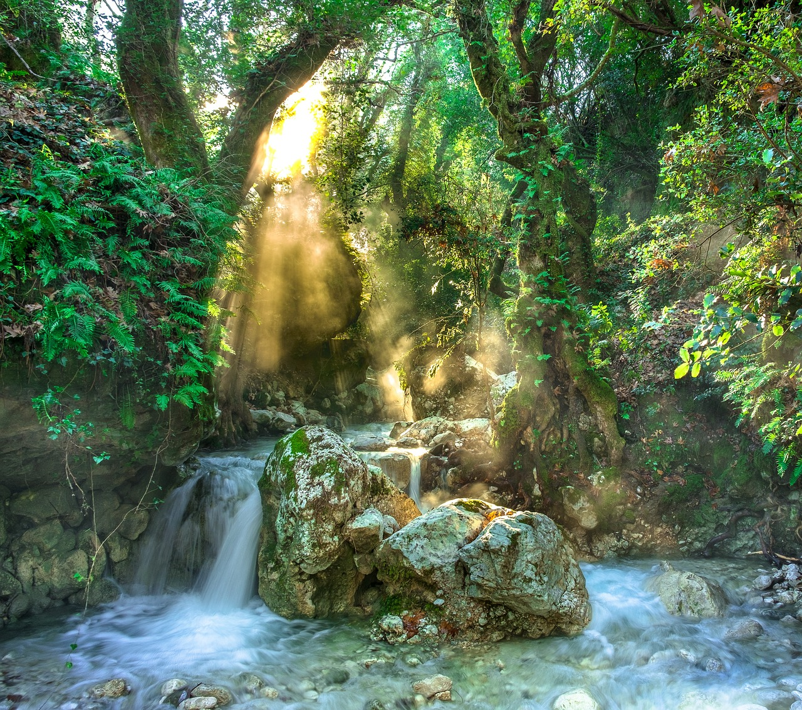
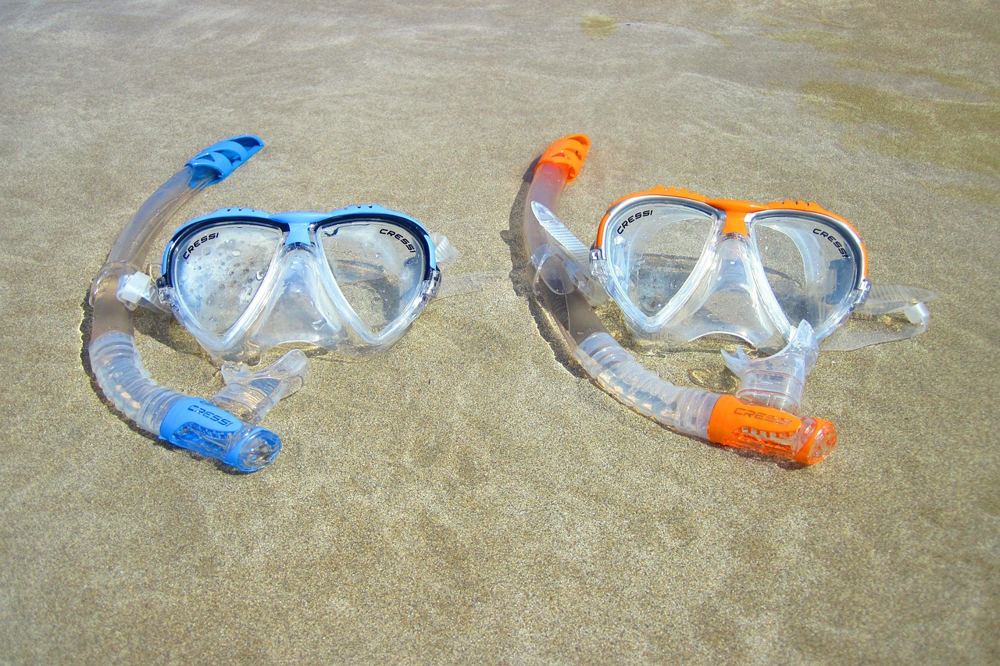

Sightseeing
| Beach | Rainforest | Volcano |

|
 |

|
|
Enjoy our white, sandy beaches that encircle Yellow Leaf Bay. Cristal clear water, refreshing in the island heat. Good for spending time with family and kids at any age. |
Go for an adventure hike in our rainforest. Be ready to walk a lot, meet some of creatures and enjoy the beauty of a rainforest. Would not recommend for small kids. |
Ready to look in the eye of danger? Visit Taniti's active volcano! Feel the heat of underground lava! Would not recommend for small kids for safety reasons. |
Entertainment
| Cultural Experience | Outdoor activities | Fun activities |
|  |

|
|
|
Interested in history? Visit our local history museum. Besides that, you can enjoy the art pieces in Taniti's art gallaries. Guests of all ages are welcome. |
Go on fishing tour or snorkleling if you want to stay closer to water. Visit the zip line if you are in the rainforest. Also you can take a helicopter ride to see the island from above. All these activities are good for people of all ages. |
Visit pubs or microbrewery (drinking age is 18 years old). Also, you can watch a movie, play an arcade or bowling on the island. Last activitiesare available for people of all ages. |